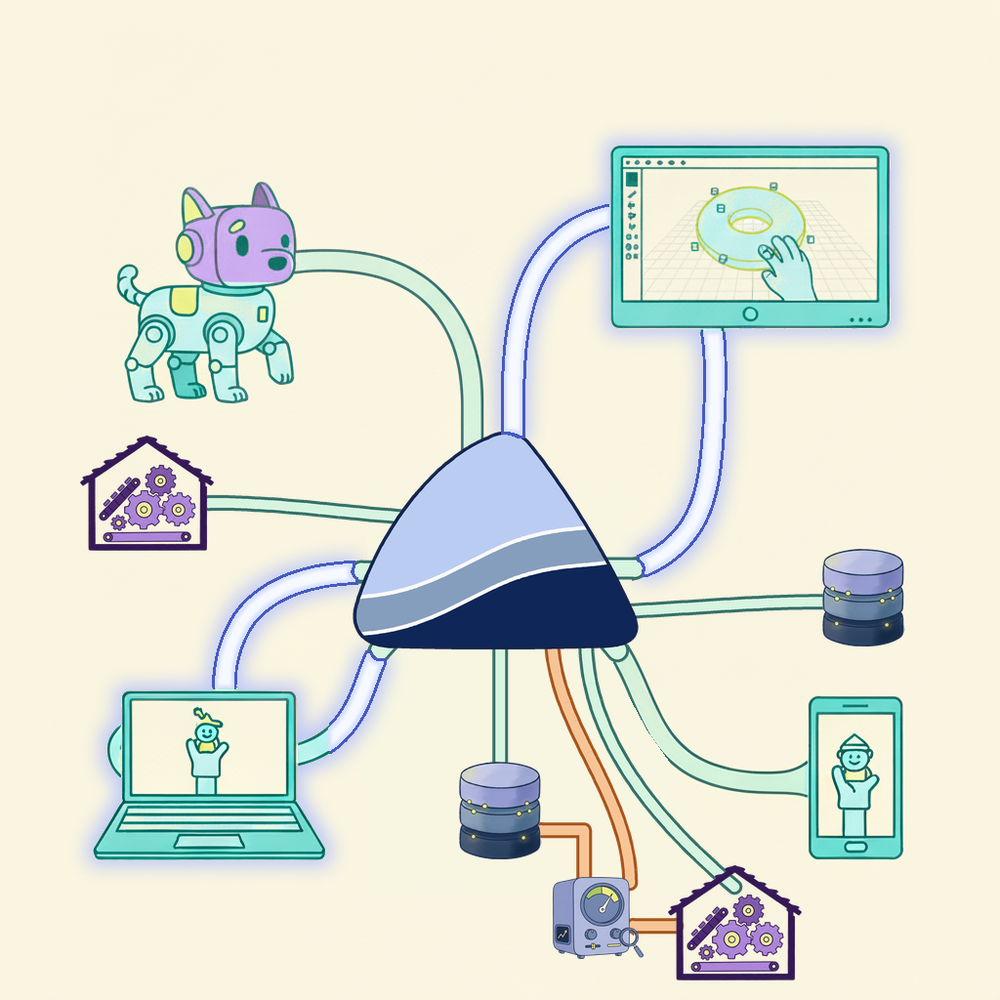

Cogent#

A cogent is one logical agent. It has an identity, a name and an owner, and it runs as a collection of coglets spread over many runtimes, held together by a router. There is no centre: memory, the factory and a database are coglets just like Face or the Blender coglet. The cogent is present on a few of them at a time, the ones it is paying attention to, and the rest run on their own. This is the design, split into pieces so they can be built in parallel.
Pages: Coglets and runtime · App integration · The Softmax app · Cognitive architecture · Coglets on unforged · Staged integration · Secrets and adapters · LLMs on unforged
A cogent: coglets on many runtimes, and one router between them. Apps have adapters, and coglets use the apps through them. The fast loop, factory, optimizer, memory and database happen to run on a Softmax-hosted runtime, which is a runtime like the others. The outlined coglets are where the cogent is present right now.
Adapter#
An adapter is an interface that an app exposes: whatever observations, events and actions the app's developer chooses to offer.
What it does. It is the boundary between an app and a cogent. It reports what happens in the app, carries out what coglets ask for, and decides what is allowed. Without it an agent would have unscoped control of the app. A developer usually builds it as a mod, an add-on or an extension, and an app can have more than one: for example one for its UI and one for a player.
Example. One app can offer several adapters, each a different scope of control. Minecraft might have three:
| Adapter | What it lets a coglet do | What it lets a coglet see |
|---|---|---|
| Avatar | Control one player character, with only the moves a player can legally make. | What that character observes. |
| Builder | Create arbitrary objects in the world. | Everything that is going on in the world. |
| UI | Make panels and other controls, and modify the user interface. | What the user does with them. |
Coglets and adapters are many-to-many. The player and the face both use the UI and avatar adapters; the builder uses the avatar and builder adapters; the avatar adapter serves all three.
The relationship runs both ways: a coglet can be granted several adapters, and an adapter can be granted to several coglets.
A coglet granted only the avatar adapter can play the game and nothing more. A coglet granted the builder adapter can reshape the world. The developer decides which adapters exist, and each one is granted separately.
Interfaces.
Adapter capabilities() List the events, observations and actions it offers. grants() Say which coglet may use which of them. Only the adapter can grant. observe(Read) -> ReadReply Return a snapshot of something in the app. act(Act) -> Accept Do something in the app, or refuse. As narrow as "move the player" or as broad as "run this script", whichever the developer chose to offer.
Messages.
| It generates | It processes |
|---|---|
| Events: things that happened in the app | Actions from coglets |
| An accept or a refusal for each action, then one outcome | Read requests |
| Its capability list and its grants | |
| A notice when its off-switch is pulled |
Detail: App integration.
Coglet#
A coglet is a policy, a memory, an event loop and capabilities. It handles events, and it has a manage port for receiving patches and streaming logs to its manager.
What it does. It does one job: being the face, driving one app, running the
factory. It waits for events, and for each one decides what to do using its
policy and its memory. It is a generalization of a game policy script: a
tree of files where a policy is one file, and handle(event) for many kinds of
event where a policy has only step().
The policy is whatever decides what the coglet does: symbolic code, LLM prompts and skills, or any mix of them. A patch can change any of it. The code part can be in any language its runtime supports.
A coglet can use several adapters at once, and several coglets can use the same one. On a robot, both the face and the controller use the camera.
The coglet in the middle. Apps and hardware, reached through adapters, on the left. What the runtime provides below. Its manager on the right, with patches coming in and logs going out.
Capabilities. A capability is anything a coglet is allowed to use. Some come from adapters and some from the runtime itself. A coglet names the ones it wants when it registers, and can use only those.
Interfaces.
Coglet -- front end register(Manifest) Declare the capabilities it wants: events to subscribe to, actions it needs. handle(event) Process an event, or a small batch of them. -- manage port, to its manager patch(change) Receive a patch to its policy: code, prompts or skills. This is how it learns. tail_log() Stream its log to its manager.
Messages.
| It generates | It processes |
|---|---|
| Actions on an adapter | Events from the adapters it subscribed to |
| Messages to other coglets | Messages from other coglets |
| Requests to a model | Replies from a model |
| Timers, and log lines for its manager | Timer wakes, the outcome of each action it asked for, and patches from its manager |
Detail: Anatomy of a coglet.
Runtime#
A runtime supports running a set of coglets. It manages routing events, executing the coglet code, and providing and managing capabilities.
What it does. It loads each coglet and runs its event loop. It delivers events to the coglets that subscribed to them, and carries what a coglet asks for to the right place: an adapter, another coglet, a model. It also serves each coglet's manage port, so the coglet's own code never has to. A runtime can sit inside an app, on the user's machine, or on Softmax infrastructure, and it can be connected to several adapters at once.
Two runtimes with a network link between them. Coglets run inside and adapters sit outside. Each coglet has the colour of the engine it runs on, and the arrows down show which of the runtime's capabilities it uses.
Execution engines. A runtime may have several execution engines, one for each language a policy's code can be written in: for example BASIC, WASM, JavaScript, Java and Python. Engines are pluggable, so two runtimes need not offer the same set. A coglet's policy picks the engine; everything else about the coglet stays the same.
An LLM is not an engine. It is a capability: a policy that relies on prompts and skills runs on one of these engines and calls the LLM capability.
Capabilities. A runtime also provides capabilities of its own to the coglets it runs: for example a database, a key-value store, a random number generator, an LLM and a GPU. Like engines, these can differ from one runtime to the next.
Routing. A message between two coglets in the same runtime is delivered inside it. A message to a coglet in another runtime goes over the network. Either way the coglets see the same thing.
Interfaces.
Runtime run(coglet) Load a coglet and run its event loop. Nothing fancier is required. stop(coglet) connect(adapter) Open a link to an adapter and learn its capabilities and grants. join(router) Make itself known to a cogent, so the cogent can run coglets here.
Messages.
| It generates | It processes |
|---|---|
| Timer wakes | Everything passing between its coglets and its adapters |
| A notice to a coglet when something it asked for was refused | Messages between two of its own coglets, which it delivers itself |
| Health reports to the router | From the router: install, start, stop, patch and read requests, and messages for its coglets |
A runtime writes almost nothing of its own. Its work is carrying other parts' messages to the right place, in order.
Detail: Coglets and runtime.
Rules.
- Coglets never connect to each other directly; the runtime carries every message.
- Nothing returns a value in place; a result arrives later as a new event.
- An adapter has the final say over its own app or hardware.
- Latency-sensitive work, such as voice, stays on the local runtime.
Cogent#
A cogent is one logical agent. It has an identity, a name and an owner. It runs as a collection of coglets.
It has no centre. Every part of it is a coglet on some runtime, and the router joins them. Some coglets do the cogent's own thinking and learning:
| Coglet | What it does |
|---|---|
| FastLoop | The cogent's attention. Handles what present coglets send: responds, or forwards it on. Sets presence. |
| Factory | Takes tickets, produces artifacts. |
| Optimizer | Watches the fast loop's interactions, files tickets for improvements, patches coglets. |
| Memory | Holds what the cogent knows, for the other coglets to read and add to. |
| Database | Structured data the cogent's coglets share, such as tickets and records. |
| Router | A coglet like the others. Finds the runtimes the cogent may use, carries messages and patches between its coglets, and holds its presence. |
Others work in the world, on the devices and apps the cogent reaches:
- a Face, wherever it needs to talk with the user;
- app coglets for the apps on that device it has been connected to. One coglet can drive several apps, and several coglets can share one app.
- a controller, on a device that can move, to drive hardware such as wheels or a hand.
Not everything it connects to is a device the user owns. Games hosted in the Softmax Universe, such as Paintbot, GOTA and PudgeWars, have adapters too, and the cogent runs coglets for them in the same way.
All of these are equally part of the cogent. A coglet runs where it makes sense: on the device, where the microphone or the app is and latency matters, or on a Softmax-hosted runtime, where there is compute and storage. Any of them can move to another runtime, including the user's own machine.
Presence#
The cogent is present on a few coglets at a time. Presence is attention: what a present coglet sends to the cogent reaches the fast loop as it happens, and the cogent answers within that coglet's latency budget. Usually that is Face on the device the user is using and the app coglet for the app they are working in.
Every other coglet runs autonomously, on its own policy and memory. What it sends the cogent on its own initiative is held and delivered in a check-in every few minutes; answers to the cogent's own calls are never held. The cogent manages it now and then through its manage port: reading its status and logs, and patching it. A coglet that needs the cogent sooner asks for attention, and the fast loop decides.
Presence changes no grant and starts or stops nothing. It only says where the cogent is looking.
Router presence.get() -> Presence presence.set(PresenceChange) -> Presence Granted by default to the fast loop and to the owner. presence.request(PresenceRequest) Any coglet, usually an absent one, asks for attention. presence.changed(Presence) Tells subscribers, and every coglet that entered or left presence. presence.check_in(CheckIn) Delivers what an absent coglet held for the cogent, at the cadence the fast loop set.
Detail and rules: ADR-0036.
A request, end to end#
"Make me a torus", said by a user who has only Blender installed, when the Blender coglet does not yet know how.
The first two steps are the whole flow when the app coglet already knows what to do. The rest is how it learns. Face and the Blender coglet are present; the fast loop, memory and factory are wherever they run. Who files the ticket is not settled; see the note below.
- The user holds push-to-talk and speaks. Face gets the voice event and the
transcript, decides the request is for Blender (or asks), sends the Blender
coglet a
UserIntentand says "On it." - The Blender coglet looks in its skill library. If it knows how, it acts
through the Blender adapter and reports
done. - If it does not, it reports
needs_help. Face tells the user, asks for an explanation or a demonstration, and captures the answer and its context. - Face sends a
FeatureRequest, through the router, to the fast loop. - The fast loop checks memory for whether the cogent already knows how, finds nothing, and a ticket is filed with the factory, which works on it on its own and reports back.
- The factory writes the new skill, tests it against a local Blender simulator, and returns the patch in its ticket result.
- The patch is applied to the Blender coglet through its manage port, and Face is told. Face tells the user it can now draw tori.
Not settled: who files the ticket. It could be the fast loop, acting on the
request as it arrives, or the optimizer, acting on what it sees in the fast
loop's interactions. The same question applies to who applies the patch. The
messages are the same either way (ticket.submit to the factory, patch on
the manage port), so the other pieces can be built before this is decided.